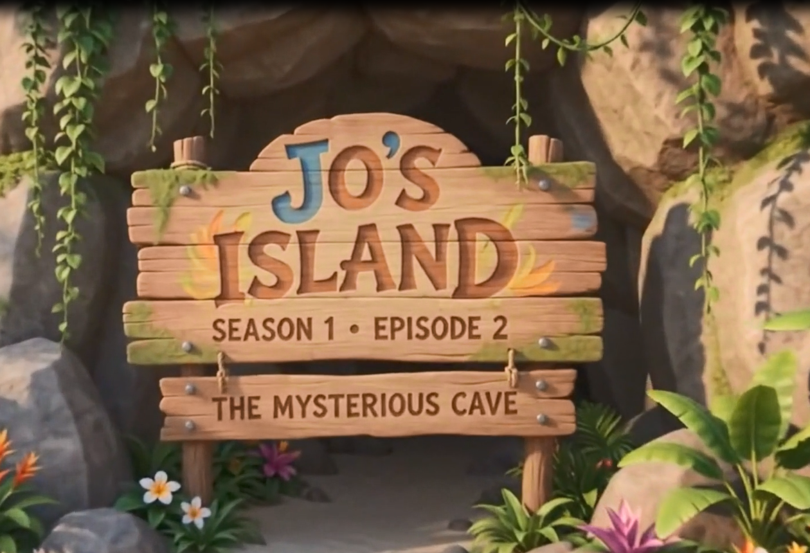
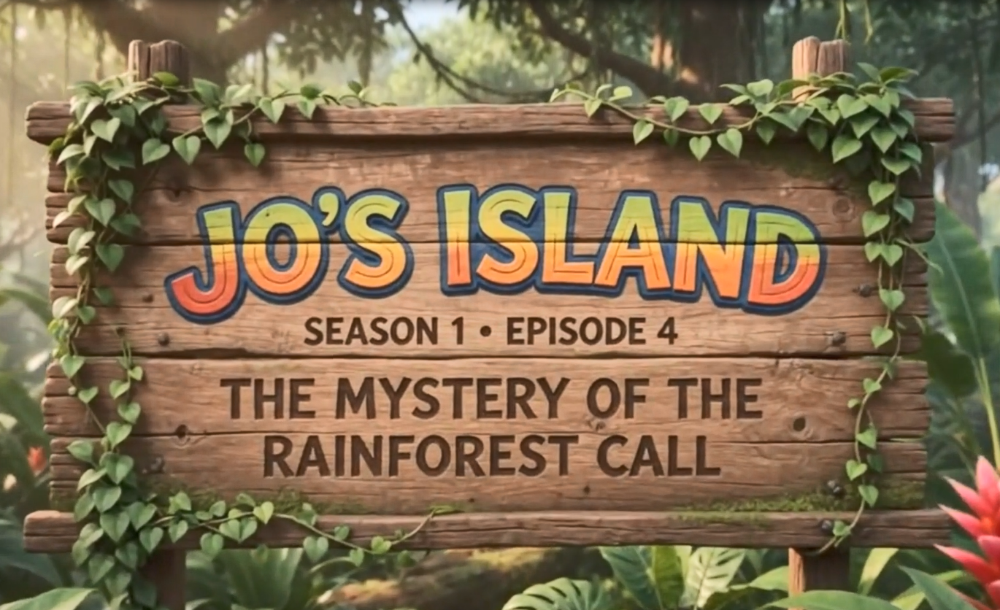

COLOR WITH JO!
Pick an adventure. Meet the animals. Color your favorites!
Pick an adventure. Meet the animals. Color your favorites!
Watch JO's Island, follow SNOJO, and learn more about JO's adventures.
The Mysterious Footprints

S1E2The Mysterious Cave
The Great Turtle Journey

S1E4Mystery of the Rainforest Call
Great job, Explorer!